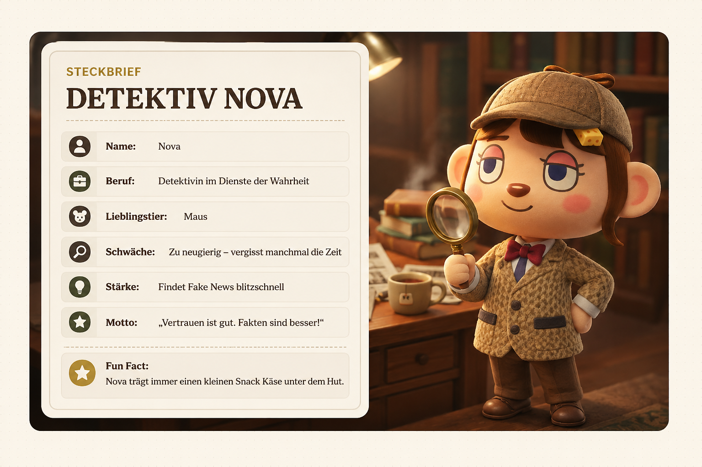

Manipulation erkennen
Du lernst, wie Schlagzeilen, Bilder und Emotionen gezielt eingesetzt werden.
Mission gegen Desinformation
Untersuche Hinweise, entlarve Tricks und lerne mit Detektiv Nova, wie man Fake News erkennt, prüft und stoppt.
Fake News sind absichtlich erfundene oder manipulierte Informationen. Sie sehen oft glaubwürdig aus, sollen aber in Wahrheit Angst auslösen, Menschen beeinflussen oder möglichst oft geteilt werden.
Du lernst, wie Schlagzeilen, Bilder und Emotionen gezielt eingesetzt werden.
Du bekommst Strategien, wie du nicht sofort weiterleitest, sondern erst prüfst.
Du lernst hilfreiche Anlaufstellen kennen, z. B. Correctiv, Mimikama und den ARD-Faktenfinder.
5-Sekunden-Check
Diese kurze Checkliste hilft dir, verdächtige Beiträge schnell einzuordnen.
Wer steckt hinter der Meldung?
Ist der Beitrag aktuell oder aus dem Kontext gerissen?
Sollst du ruhig informiert oder aufgeregt werden?
Passt das Bild wirklich zur Geschichte?
Berichten auch andere verlässliche Quellen?
Typische Muster
Fake News sehen unterschiedlich aus, nutzen aber oft ähnliche Tricks.
Große Worte, viele Ausrufezeichen und starke Emotionen.
Kein Impressum, unbekannte Seite oder nachgemachte Namen.
Ein altes Bild wird so gezeigt, als wäre es gerade passiert.
Formulierungen wie „sofort weiterleiten“ sollen dich antreiben.
Verbreitungsweg
Eine Fake News verbreitet sich oft nicht auf einmal, sondern Schritt für Schritt.
Eine Behauptung taucht auf.
Menschen reagieren wütend oder ängstlich.
Likes und Kommentare schieben den Beitrag weiter.
Der Beitrag landet in Chats und Gruppen.
